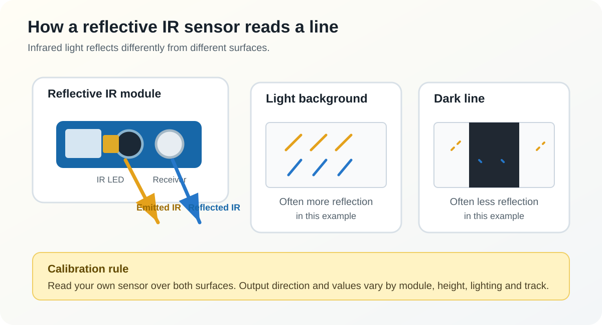
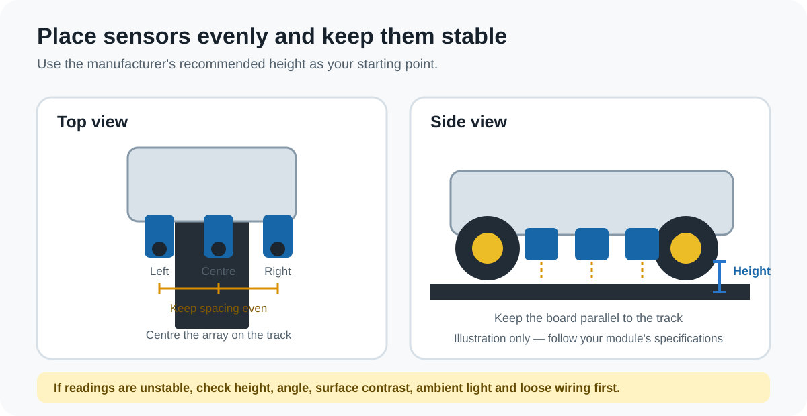

Does your Arduino line-follower robot drift off the track, turn the wrong way, or miss sharp curves? Incorrectly calibrated IR sensors may be the cause. Their readings can change with sensor height, track material, ambient light and module design.
If you are still assembling the robot, start with our line follower robot using Arduino tutorial for the complete build. This guide focuses on sensor calibration and tracking problems after assembly.
You'll learn how to observe sensor outputs, adjust detection thresholds, check sensor placement and troubleshoot common line-following faults without guessing at the code.
1. How IR sensors detect a line
A common reflective infrared (IR) module includes an IR LED and a receiver. The LED emits infrared light, while the receiver measures some of the light reflected by the surface. Black tape and a light background often reflect different amounts, letting the robot distinguish the line from the track.
However, output logic varies by module. Black does not always produce LOW, and white does not always produce HIGH. A digital module may include a comparator and an adjustable potentiometer; an analog sensor reports a changing voltage. Some boards expose both outputs.

KEY POINT
Calibrate the actual module on the actual track. A sample threshold copied from another project may not work with your sensor, lighting or surface.
2. Check the setup before calibration
Calibration will not fix loose wiring, a misaligned sensor board or incorrect power. Before you measure anything:
- Confirm the module supply voltage from its product documentation.
- Connect sensor ground and Arduino ground as required by the circuit.
- Check that signal wires match the pins used in your sketch.
- Secure the sensors so their height and angle stay constant.
- Clean the sensor faces and test on the actual track material.
- Keep motor power disconnected or raise the wheels while checking sensor logic.
There is no universal mounting height for every IR module. Start with the manufacturer's recommendation, then make small adjustments while watching the readings. Keep sensors parallel to the surface and at a consistent height. For multi-sensor arrays, keep spacing even and centre the array over the track.

3. Read a two-sensor digital IR module with Arduino
This example is for two digital sensor outputs connected to pins 2 and 3 on an Arduino Uno R3. It prints the signals without moving the motors, so you can check the sensors before testing the driving logic.
const int LEFT_SENSOR = 2;
const int RIGHT_SENSOR = 3;
void setup() {
Serial.begin(9600);
pinMode(LEFT_SENSOR, INPUT);
pinMode(RIGHT_SENSOR, INPUT);
}
void loop() {
int leftValue = digitalRead(LEFT_SENSOR);
int rightValue = digitalRead(RIGHT_SENSOR);
Serial.print("Left: ");
Serial.print(leftValue);
Serial.print(" | Right: ");
Serial.println(rightValue);
delay(200);
}How to record the readings
- Upload the sketch and open Serial Monitor at 9600 baud.
- Place both sensors over the light background and record their outputs.
- Move the left sensor over the dark line, then repeat with the right sensor.
- Move both sensors over the line and compare their outputs again.
| Test surface | Left sensor | Right sensor |
|---|---|---|
| Both on light background | Record your result | Record your result |
| Left sensor on dark line | Record your result | Record your result |
| Right sensor on dark line | Record your result | Record your result |
| Both on dark line | Record your result | Record your result |
Some modules output LOW when they detect the line; others behave differently. Use the measured results rather than assuming a HIGH/LOW pattern. If a reading never changes, check power, wiring, sensor height and any sensitivity adjustment before editing the motor code.
4. Set a threshold for analog IR sensors
If your sensor has an analog output, read it using an Arduino analog input. On a classic Uno R3, analogRead() typically returns values from 0 to 1023. Your actual readings depend on the sensor and the track.
const int LEFT_SENSOR = A0;
const int RIGHT_SENSOR = A1;
void setup() {
Serial.begin(9600);
}
void loop() {
int leftValue = analogRead(LEFT_SENSOR);
int rightValue = analogRead(RIGHT_SENSOR);
Serial.print("Left: ");
Serial.print(leftValue);
Serial.print(" | Right: ");
Serial.println(rightValue);
delay(200);
}Record several readings over the dark line and light background. If the values fluctuate, record multiple samples for each surface and use a representative value, such as the median, instead of relying on a single reading. Imagine your own tests produce readings near 260 on the dark line and 780 on the light surface. These are illustrative values, not a specification for any particular module.
If the two ranges are well separated, a reasonable starting threshold is their midpoint:
threshold = (darkReading + lightReading) / 2;
// Example only: (260 + 780) / 2 = 520If dark produces lower values, the detection condition could be:
const int LINE_THRESHOLD = 520;
bool isOnLine(int reading) {
return reading < LINE_THRESHOLD;
}If dark produces higher readings, reverse the comparison:
const int LINE_THRESHOLD = 520;
bool isOnLine(int reading) {
return reading > LINE_THRESHOLD;
}Replace 520 with a threshold based on your own measurements. If the dark and light ranges overlap, choosing a midpoint will not solve the problem. Recheck sensor height, surface contrast, lighting and sensor condition.
5. Adjust the digital module's potentiometer
Many digital IR modules include a small potentiometer that changes the comparator threshold. If your board has one, adjust it slowly while observing the output indicator or the Arduino Serial Monitor.
- Power the module at its rated voltage.
- Hold the sensor above the light background and note the output.
- Turn the potentiometer a small amount.
- Move the sensor over the dark line and check whether the output switches.
- Repeat until both surfaces give stable, different readings at the final mounting height.
Avoid large turns. If the output flickers while the sensor is still, check for poor contrast, ambient light, loose wires or a mounting distance that does not suit the module. Not all IR sensors have an adjustable potentiometer, so consult the module documentation.
6. Troubleshoot line-following problems
| Symptom | Likely causes | What to check |
|---|---|---|
| Robot follows the background instead of the line | Inverted sensor logic or wrong threshold condition | Compare actual Serial Monitor readings and reverse the condition if needed. |
| Robot keeps turning left | Left sensor mapping or motor direction is wrong | Test each sensor and motor separately; verify driver wiring. |
| Robot keeps turning right | Right sensor mapping or motor direction is wrong | Check the right sensor output and motor connections. |
| It loses the line on curves | Sensor spacing, line width, speed or steering logic | Try a lower speed and check whether sensors see the curve early enough. |
| It works under one light but not another | Ambient light affects the module's response | Calibrate and test under expected operating conditions. |
| Readings jump without movement | Loose connections, electrical noise or weak surface contrast | Secure wires, check grounding and repeat measurements. |
| It misses intersections | The control code does not handle that sensor combination | Log the sensor states at the junction and write an explicit response. |
Diagnose sensors before changing the motor-control algorithm. Otherwise, code changes may hide the real issue rather than fix it.
7. Test straight lines, curves and intersections
Straight line
Confirm that the sensors identify the line consistently and that the robot moves forward without repeated steering corrections.
Gradual and sharp curves
Check whether the sensor layout detects the line early enough for the controller to steer. If it loses the track, test at a lower speed and review sensor spacing, line width and steering conditions.
Intersections
Record the sensor combination when the robot reaches a junction. Add a deliberate rule for that combination instead of assuming it behaves like a normal left or right turn.
Expected lighting
If the robot will be used under changing indoor light, test in those conditions. A threshold that works in one place may not work reliably elsewhere.
8. What changes with three, five or six sensors?
A larger array can provide more information about the line's position, but more sensors do not automatically guarantee better tracking.
- Two sensors: suitable for basic left/right detection.
- Three sensors: a centre sensor can identify the line during straight travel, while outer sensors help detect deviations.
- Five sensors: offers more line-position information for control logic that can use it.
- Six sensors: may provide additional resolution depending on the array layout and code.
For three-sensor line-follower Arduino code or a larger array, record each channel over the dark line and light background. If the array exposes analog outputs, assess each sensor's readings individually. If it exposes digital outputs, verify each sensor's logic before building steering conditions. Avoid assuming every channel shares the same ideal threshold.
9. Final calibration checklist
- Sensor supply voltage and wiring match the module's specifications.
- Sensor and Arduino grounds are connected correctly.
- Each sensor changes output between the line and background.
- The sensor board is secure, aligned and mounted at a consistent height.
- The Arduino logic matches the observed digital state or analog reading.
- Any analog threshold comes from measured readings, not a copied value.
- The robot follows a straight section without excessive corrections.
- Curves and intersections have been tested at a safe speed.
- Calibration has been checked under expected lighting conditions.
Repeat calibration whenever you change sensors, line width, track material, mounting height or the operating environment.
CONTINUE THE BUILD
Need the complete robot guide?
Use the full tutorial for assembly, connections and the overall Arduino line-follower build. This page covers the separate task of calibrating and checking the IR sensors.
Open the Arduino line-follower guide →Frequently asked questions
Why does my Arduino line follower keep moving off the line?
Check sensor logic, alignment, threshold, wiring and motor direction. Read the sensor outputs first, then test the motors independently.
How do I know whether my IR sensor detects black or white?
Read its digital or analog output while placing it over both surfaces. The response depends on the module, so use measurements from your own setup.
What threshold should I use for an analog IR sensor?
There is no universal value. Measure the line and background readings, choose a starting point between clearly separated ranges, then validate it on the actual track.
Can I calibrate a digital IR sensor without Arduino code?
If the module has a potentiometer and output indicator, you can often adjust the switching point manually. Arduino readings provide another way to confirm the signal received by the controller.
Why does my robot work on a straight line but fail on turns?
Sensor spacing, line width, speed and steering logic may not suit the curve. Test slowly and confirm that the sensors can detect the line early enough.
Do five IR sensors make a line follower more accurate?
A five-sensor array provides more information about line position, but accuracy still depends on sensor quality, mounting, calibration and the control algorithm.
Technical note: Sensor outputs and thresholds vary by module, surface and lighting. Check the documentation for your exact sensor and validate readings on your own track. Example analog readings in this article are illustrative, not measured product specifications.